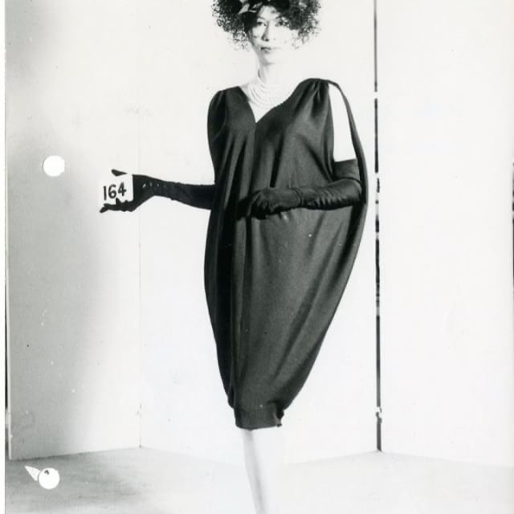
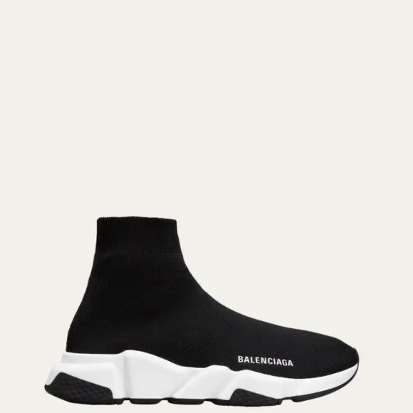
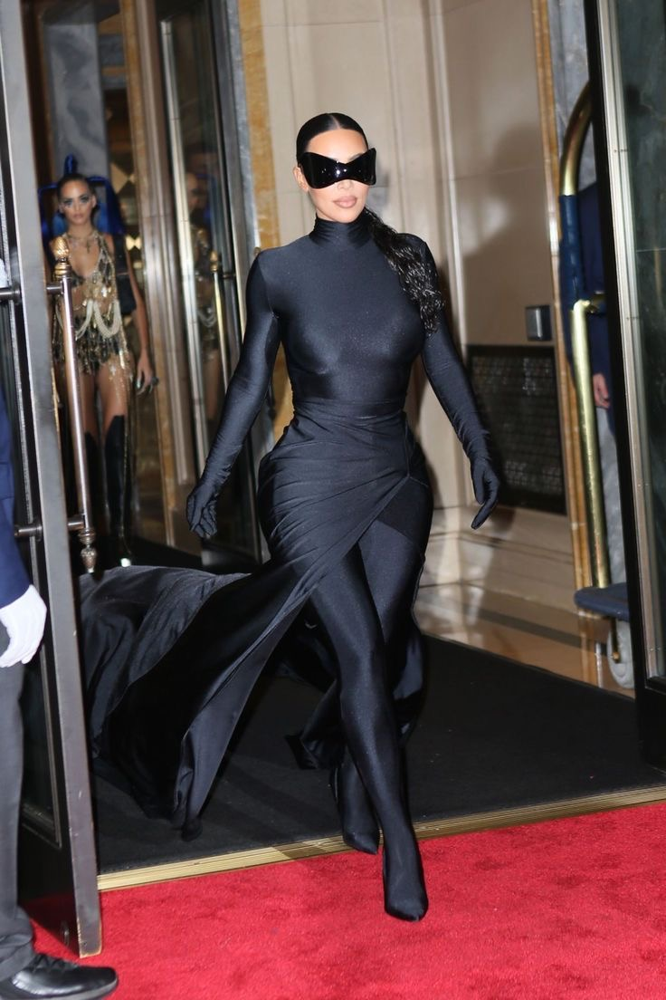

Probablemente Cristóbal Balenciaga sea uno de los diseñadores españoles más importantes, pero nadie le da el reconocimiento que se merece. La maison se fundó en 1917 en San Sebastián, España. Toda su vida vio a su madre coser debido a que era costurera y aprendió de ella.
Desde pequeño él ya sabía que quería ser diseñador y pronto empezó a vestir a las mujeres de su ciudad natal. Cuando abrió la tienda en Donosti (San Sebastián), las mujeres nobles se fijaron en él y su arte para diseñar y confeccionar; esto hizo que comenzasen a confiar en Cristóbal para que fuese él quien las vistiese. Cuando llega la Guerra Civil, Cristóbal tiene que tomar la decisión de cerrar sus tiendas en España y mudarse a París.
Su primera línea fue en 1937 e inspirada en el Renacimiento español; hizo su debut en su atelier de París, en la avenida de Jorge V, y estoy segura de que no dejó a nadie indiferente. Los críticos y compradores estaban impresionados. Cristóbal no trabajaba de una manera tradicional: no utilizaba bocetos, él jugaba con las telas para que ellas mismas creasen su propio movimiento. Si estáis tapped in en las redes habréis visto a un niño que ha hecho su primer desfile en PFW este año, Max Alexander. Su trabajo es impresionante y su manera de crear me recuerda mucho a Cristóbal. Cristóbal creó una nueva silueta para las mujeres.

Si en el anterior artículo sobre Chanel dije que Matthieu Blazy era detallista, lo de Cristóbal era next level. Cada puntada, doblez y forma estaba supervisado y planificado por él. En 1939, la capital de la moda ya conocía a Cristóbal y era respetado por muchos; incluso la misma Coco Chanel lo apodó como el verdadero “couturier”. Durante la Segunda Guerra Mundial había gente que se arriesgaba a viajar solo para conseguir uno de sus diseños, sobre todo el abrigo cuadrado.
Cristóbal era uno de esos diseñadores que amaba a las mujeres; adaptaba sus diseños al cuerpo de estas, al contrario que Christian Dior con su conocido “new look” que estaba hecho para encajar en ese tipo de cuerpo “hourglass”. Cristóbal creaba sus diseños por y específicamente para cada mujer. Muchos de los diseños icónicos de Balenciaga fueron confeccionados en esta época, como el vestido infanta del 39, una referencia clara a nuestra España, o el vestido “saco” del 57. Cristóbal se retiró en 1968, pero estuvo detrás de todo hasta su muerte.
Si hay un patrón que normalmente se repite es la “muerte” temporal de la maison después de que su fundador o fundadora se desvincule de la marca. Pues así pasó también con Balenciaga cuando murió en 1972. No fue hasta que llegó Nicolas Ghesquière que la casa revivió. La marca pasó a una visión más moderna, incluso podríamos decir futurista, pero no dejó atrás las referencias y la inspiración por Cristóbal.
En 2013 entró Alexander Wang como diseñador jefe. Cada uno opta por un estilo sin perder la esencia de la marca y Wang optó por la comodidad. Fusionó el lujo y la sofisticación de Cristóbal y Nicolas con el streetwear. Trajo una energía de calle, de deportes, el look monocromático pero sobre todo lo funcional. Para Alexander era muy importante que lo funcional resonase más que el lujo, lo que llevó a la juventud a interesarse por la firma. Él fue el que facilitó el camino al siguiente director creativo para entrar en el lujo moderno con su partida en el 2015.
Aquí es donde llega la verdadera revolución en la maison: Demna Gvasalia. O lo amas o lo odias. Mi opinión la conoceréis en un artículo de Substack donde dejo ver más mi gusto y ojo crítico. Demna apostó por el streetwear sin perder la herencia de Balenciaga, o eso dice. Destaca la ropa oversize, estampados en camisetas y el calzado como las Speed, esos zapatos que parecen escarpines.

También fueron clave los hombros rectangulares que usaba en sus diseños y apariciones de celebrities como Kim Kardashian, la cual ha sido vista llevando sus creaciones en múltiples ocasiones. Fun Fact: Mientras Cristóbal huía de la atención mediática, Kim Kardashian se convirtió en la cara de la marca, demostrando que en el siglo XXI el misterio ya no vende tanto como el algoritmo.

En 2025 Demna deja la maison y con ella entra Pierpaolo Piccioli, que rescata más esa belleza clásica y técnica de Cristóbal. Debutó con el show de primavera-verano 2026; eliminó esos escenarios distópicos de Demna y recuperó esa obsesión por el movimiento de la tela alrededor del cuerpo de la mujer típica de Cristóbal. La era de Pierpaolo promete devolvernos al Balenciaga arquitecto, pero ¿es suficiente la técnica para sobrevivir en el mercado actual? Mi análisis sin filtros sobre si Demna salvó o destruyó la esencia de la casa lo tenéis en mi último artículo de Substack.